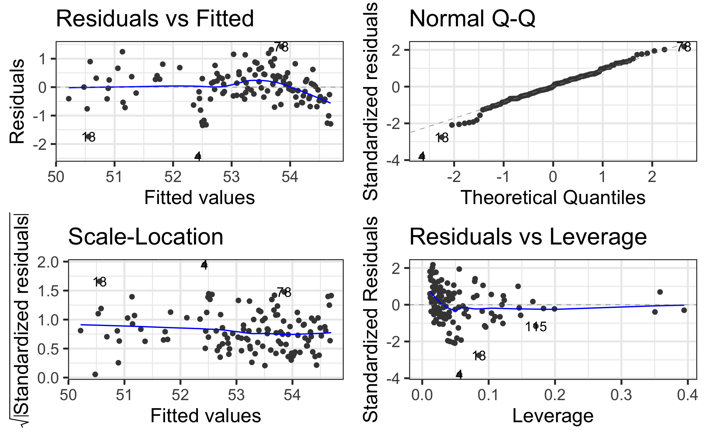

Review of multiple linear regression
Part 2
class: middle, center
Announcements
- Lab starts Thu 3:30 - 4:45pm online
- Find Zoom link in Sakai
- Office hours this week:
- Thu 2 - 3pm & Fri 1 - 2pm online (links in Sakai)
- Full office hours schedule starts Tue, Jan 19
- Week 02 reading: BMLR: Chapter 2- Beyond Least Squares: Using Likelihoods
class: middle
Questions?
class: middle, inverse
Recap
Data: Kentucky Derby Winners
.midi[ Today’s data is from the Kentucky Derby, an annual 1.25-mile horse race held at the Churchill Downs race track in Louisville, KY. The data is in the file derbyplus.csv and contains information for races 1896 - 2017. ]
.pull-left[
.midi[Response variable]
- .midi[
speed: Average speed of the winner in feet per second (ft/s)]
.midi[Additional variable] .midi[- winner: Winning horse] ]
.pull-right[ .midi[Predictor variables] - .midi[year: Year of the race] - .midi[condition: Condition of the track (good, fast, slow)] - .midi[starters: Number of horses who raced]]
Data
derby <- read_csv("data/derbyplus.csv") %>%
mutate(yearnew = year - 1896)derby %>%
head(5) %>% kable()| year | winner | condition | speed | starters | yearnew |
|---|---|---|---|---|---|
| 1896 | Ben Brush | good | 51.66 | 8 | 0 |
| 1897 | Typhoon II | slow | 49.81 | 6 | 1 |
| 1898 | Plaudit | good | 51.16 | 4 | 2 |
| 1899 | Manuel | fast | 50.00 | 5 | 3 |
| 1900 | Lieut. Gibson | fast | 52.28 | 7 | 4 |
Model 1: Main effects model (with centering)
| term | estimate | std.error | statistic | p.value |
|---|---|---|---|---|
| (Intercept) | 52.175 | 0.194 | 269.079 | 0.000 |
| starters | -0.005 | 0.017 | -0.299 | 0.766 |
| yearnew | 0.023 | 0.002 | 9.766 | 0.000 |
| conditiongood | -0.443 | 0.231 | -1.921 | 0.057 |
| conditionslow | -1.543 | 0.161 | -9.616 | 0.000 |
Model 2: Include quadratic effect for year
.midi[
| term | estimate | std.error | statistic | p.value |
|---|---|---|---|---|
| (Intercept) | 51.4130 | 0.1826 | 281.5645 | 0.0000 |
| starters | -0.0253 | 0.0136 | -1.8588 | 0.0656 |
| yearnew | 0.0700 | 0.0061 | 11.4239 | 0.0000 |
| I(yearnew^2) | -0.0004 | 0.0000 | -8.0411 | 0.0000 |
| conditiongood | -0.4770 | 0.1857 | -2.5689 | 0.0115 |
| conditionslow | -1.3927 | 0.1305 | -10.6701 | 0.0000 |
]
Model 2: Check model assumptions
class: middle, inverse
## Model 3
Include interaction term?
Recall from the EDA…
Model 3: Include interaction term
\[\begin{aligned}\widehat{speed} = & 52.387 - 0.003 ~ starters + 0.020 ~ yearnew - 1.070 ~ good - 2.183 ~ slow \\ &+0.012 ~ yearnew \times good + 0.012 ~ yearnew \times slow \end{aligned}\]
.panelset.sideways[ .panel[.panel-name[Output]
| term | estimate | std.error | statistic | p.value |
|---|---|---|---|---|
| (Intercept) | 52.387 | 0.200 | 262.350 | 0.000 |
| starters | -0.003 | 0.016 | -0.189 | 0.850 |
| yearnew | 0.020 | 0.003 | 7.576 | 0.000 |
| conditiongood | -1.070 | 0.423 | -2.527 | 0.013 |
| conditionslow | -2.183 | 0.270 | -8.097 | 0.000 |
| yearnew:conditiongood | 0.012 | 0.008 | 1.598 | 0.113 |
| yearnew:conditionslow | 0.012 | 0.004 | 2.866 | 0.005 |
]
.panel[.panel-name[Code]
model3 <- lm(speed ~ starters + yearnew + condition +
yearnew * condition,
data = derby)
tidy(model3) %>% kable(digits = 4)] .panel[.panel-name[Assumptions]

] ]
Interpreting interaction effects
| term | estimate | std.error | statistic | p.value |
|---|---|---|---|---|
| (Intercept) | 52.387 | 0.200 | 262.350 | 0.000 |
| starters | -0.003 | 0.016 | -0.189 | 0.850 |
| yearnew | 0.020 | 0.003 | 7.576 | 0.000 |
| conditiongood | -1.070 | 0.423 | -2.527 | 0.013 |
| conditionslow | -2.183 | 0.270 | -8.097 | 0.000 |
| yearnew:conditiongood | 0.012 | 0.008 | 1.598 | 0.113 |
| yearnew:conditionslow | 0.012 | 0.004 | 2.866 | 0.005 |
Click here for poll
04:00
Measures of model performance
- \(\color{#4187aa}{R^2}\): Proportion of variability in the response explained by the model.
- Will always increase as predictors are added, so it shouldn’t be used to compare models
- \(\color{#4187aa}{Adj. R^2}\): Similar to \(R^2\) with a penalty for extra terms
–
\(\color{#4187aa}{AIC}\): Likelihood-based approach balancing model performance and complexity
\(\color{#4187aa}{BIC}\): Similar to AIC with stronger penalty for extra terms
–
- Nested F Test (extra sum of squares F test): Generalization of t-test for individual coefficients to perform significance tests on nested models
Which model would you choose?
Use the glance function to get model statistics.
| model | r.squared | adj.r.squared | AIC | BIC |
|---|---|---|---|---|
| Model1 | 0.730 | 0.721 | 259.478 | 276.302 |
| Model2 | 0.827 | 0.819 | 207.429 | 227.057 |
| Model3 | 0.751 | 0.738 | 253.584 | 276.016 |
Which model would you choose?
Characteristics of a “good” final model
- Model can be used to answer primary research questions
- Predictor variables control for important covariates
- Potential interactions have been investigated
- Variables are centered, as needed, for more meaningful interpretations
- Unnecessary terms are removed
- Assumptions are met and influential points have been addressed
- Model tells a “persuasive story parsimoniously”
.footnote[List from Section 1.6.7 of BMLR]
class: middle, inverse
Inference for multiple linear regression
Inference for regression
Use statistical inference to
- Determine if predictors are statistically significant (not necessarily practically significant!)
- Quantify uncertainty in coefficient estimates
- Quantify uncertainty in model predictions
If L.I.N.E. assumptions are met, we can conduct inference using the \(t\) distribution and estimated standard errors
Inference for regression
.pull-left[
When L.I.N.E. conditions are met
]
.pull-right[
Use least squares regression to get the estimates \(\hat{\beta}_0\), \(\hat{\beta}_1\), and \(\hat{\sigma}^2\)
\(\hat{\sigma}\) is the regression standard error
\[\hat{\sigma} = \sqrt{\frac{\sum_{i=1}^n(y_i - \hat{y}_i)^2}{n - p - 1}} = \sqrt{\frac{\sum_{i=1}^n e_i^2}{n-p-1}}\]
where \(p\) is the number of non-intercept terms in the model
(p = 1 in simple linear regression) ]
Inference for \(\beta_j\)
- Suppose we have the following model:
\[y_i = \beta_0 + \beta_1 x_{1i} + \beta_2 x_{2i} + \dots + \beta_p x_{pi} + \epsilon_i \hspace{5mm} \epsilon \sim N(0, \sigma^2)\]
–
- We use least squares regression to get estimates for the parameters \(\beta_0, \beta_1, \ldots, \beta_p\) and \(\sigma^2\). The regression equation is
\[\hat{y} = \hat{\beta}_0 + \hat{\beta}_1 x_1 + \hat{\beta}_2 x_2 + \dots + \hat{\beta}_p x_p\]
- When the L.I.N.E. assumptions are met, \(\hat{\beta}_j \sim N(\beta_j, SE_{\hat{\beta}_j})\).
- The objective of statistical inference is to understand \(\beta_j\)
- Use \(\hat{\sigma}\) to estimate \(SE_{\hat{\beta}_j}\), the standard error of \(\hat{\beta}_j\)
Inference for \(\beta_j\)
.eq[ \[SE_{\hat{\beta}_j} = \hat{\sigma}\sqrt{\frac{1}{(n-1)s_{x_j}^2}}\]]
Conduct inference for \(\beta_j\) using a \(t\) distribution with \(n-p-1\) degrees of freedom (df).
\(\hat{\beta}_j\) follows a \(t\) distribution, because \(\hat{\sigma}\) (not \(\sigma\)) is used to calculate the standard error of \(\hat{\beta}_j\).
The distribution has \(n-p-1\) df because we use up \(p + 1\) df to calculate \(\hat{\sigma}\), so there are \(n - p - 1\) df left to understand variability.
Hypothesis test for \(\beta_j\)
.pull-left[ 1️⃣ State the hypotheses
.eq[ \[\small{H_0: \beta_j = 0 \text{ vs. }H_a: \beta_j \neq 0}\]]
2️⃣ Calculate the test statistic.
.eq[ \[\small{t = \frac{\hat{\beta}_j - 0}{SE_{\hat{\beta}_j}} = \frac{\hat{\beta}_j - 0}{\hat{\sigma}\sqrt{\frac{1}{(n-1)s_{x_j}^2}}}}\]] ]
.pull-right[ 3️⃣ Calculate the p-value.
.eq[ \[\text{p-value} = 2P(T > |t|) \hspace{4mm} T \sim t_{n-p-1}\]]
4️⃣ State the conclusion in context of the data.
.eq[ Reject \(H_0\) if p-value is sufficiently small.]
]
Confidence intervals
.eq[ The \(C\)% confidence confidence interval for \(\beta_j\) is
\[\begin{align}&\hat{\beta}_j \pm t^* \times SE_{\hat{\beta}_j}\\[8pt] &\hat{\beta}_j \pm t^* \times \hat{\sigma}\sqrt{\frac{1}{(n-1)s_{x_{j}}^2}}\end{align}\] where the critical value \(t^* \sim t(n-p-1)\) ]
General interpretation: We are \(C\)% confident that for every one unit increase in \(x_j\), the response is expected to change by LB to UB units, holding all else constant.
Inference Activity (~8 minutes)
Use the Model 3 output on the next slide to conduct a hypothesis test and interpret the 95% confidence interval for your assigned variable.
- You do not have to do the calculations by hand.
Choose one person to write your group’s response on your slide slide.
Choose on person to share your group’s responses with the class.
Model 3 output
| term | estimate | std.error | statistic | p.value | conf.low | conf.high |
|---|---|---|---|---|---|---|
| (Intercept) | 52.387 | 0.200 | 262.350 | 0.000 | 51.991 | 52.782 |
| starters | -0.003 | 0.016 | -0.189 | 0.850 | -0.035 | 0.029 |
| yearnew | 0.020 | 0.003 | 7.576 | 0.000 | 0.014 | 0.025 |
| conditiongood | -1.070 | 0.423 | -2.527 | 0.013 | -1.908 | -0.231 |
| conditionslow | -2.183 | 0.270 | -8.097 | 0.000 | -2.717 | -1.649 |
| yearnew:conditiongood | 0.012 | 0.008 | 1.598 | 0.113 | -0.003 | 0.027 |
| yearnew:conditionslow | 0.012 | 0.004 | 2.866 | 0.005 | 0.004 | 0.020 |
Additional review topics
Acknowledgements
These slides are based on content in BMLR: Chapter 1 - Review of Multiple Linear Regression